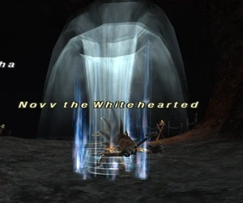
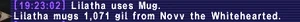

Level 75 reference · Zenith rules
|
Job: White Mage Notorious Monster |
 |

|
Zone |
Level |
Drops |
Steal |
Spawns |
Notes | ||||||
|
66 |
1 |
| |||||||||
|
HP = Detects Low HP; M = Detects Magic; Sc = Follows by Scent; T(S) = True-sight; T(H) = True-hearing JA = Detects job abilities; WS = Detects weaponskills; Z(D) = Asleep in Daytime; Z(N) = Asleep at Nighttime | |||||||||||
 Image source
Image source
Notes:
- Spawns around (J-7)/(K-7)/(K-8)
- lottery spawns off of a Lagoon Sahagin (Not sure which one on Widescan because DSP, Needs testing)
- Has fairly strong Auto Regen. (if they cast regen III, otherwise not)
- Uses the spells/abilities:

Mug with Assassin's Bonnet Equipped ~1000 gil

Adapted from Eden Wiki: Novv the Whitehearted · Contributors and history · CC BY-SA 4.0. Revision 46916. Layout, links and optional background text adapted for Zenith.